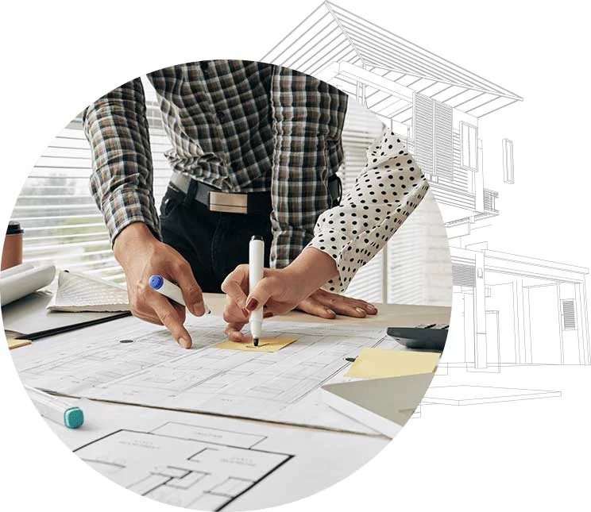
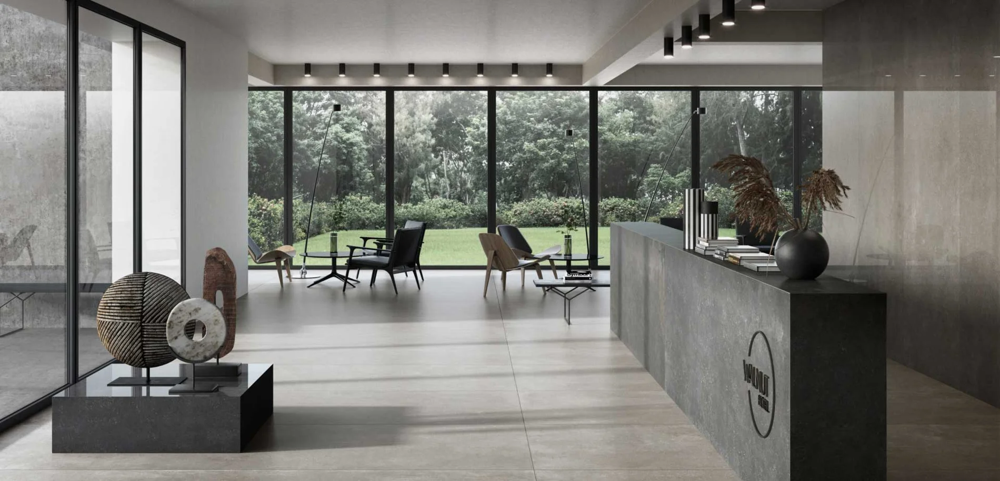
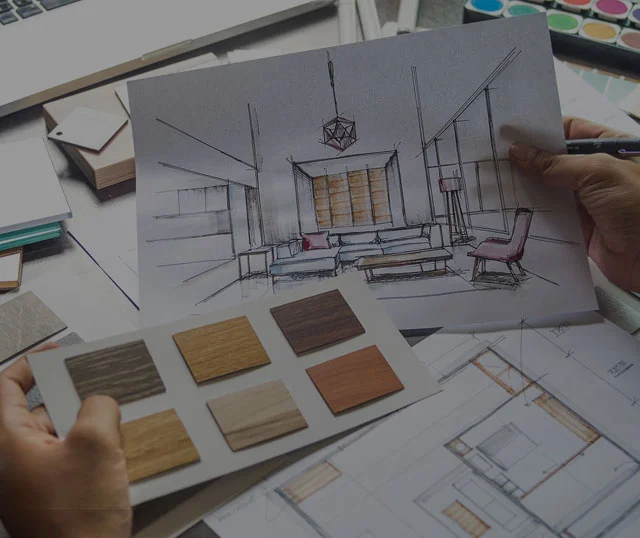
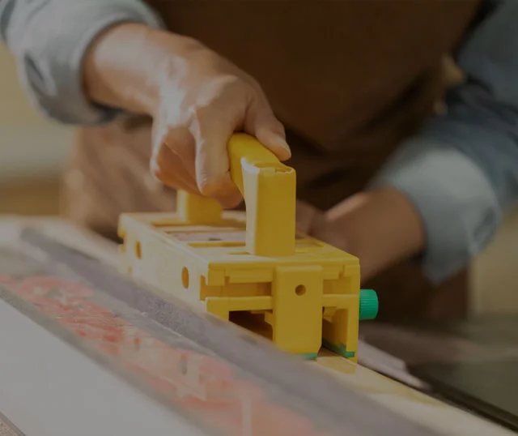

專案管理
串聯設計、技術與施工團隊，整合進度、預算、品質及現場協調，讓每個環節都有清楚的安排。

OUR SERVICES
整合設計、施工與專案管理，陪伴空間從構想到完成。
串聯設計、技術與施工團隊，整合進度、預算、品質及現場協調，讓每個環節都有清楚的安排。
從住宅、商業到辦公場域，重視施工細節、材料品質與現場執行，將圖面轉化為真實空間。
回應空間規劃與品牌形象，整理設計細節、施工圖面與材料運用，讓想像具備落地的條件。
透過家具、織品與飾品的搭配，延續空間的設計語彙，讓使用感受與視覺層次相互呼應。
依照空間需求，整合訂製家具、地毯及金屬展示道具，讓尺寸、材質與細節形成一致的風格。
PROJECT MANAGEMENT

透過進度、品質、安全與成本等面向的控制與管理，達成預期的工期、品質、安全與成本目標。
管理範疇涵蓋專案規劃、合約管理、資訊管理與現場管理等制度性工作，並針對人力、技術、資金、材料與設備等生產要素進行合理調度與動態控制，讓每個專案都有清楚可依循的管理方法。

THREE GUARANTEES
依工程進度安排材料與設備採購，掌握多元供應管道並嚴格把關進場品質；機具進場前完成性能檢查與維護，即時排除故障與安全隱患。
施工人員熟悉圖面並訂定合適工法，各專業工班依規程與圖面要求施作；遇突發狀況即時調整應變，並與設計、施工單位保持密切溝通。
依計畫合理調度人力並安排施工，定期召開協調會議因應現場需求；農忙、節慶等特殊期間，仍確保工程正常進行。


PROJECT PHASES
指定專案經理並成立專案小組，依規模與特性擬定管理規劃、規章制度及施工組織設計，完成現場準備並提出開工申請。
依施工組織設計執行並動態管理進度、品質、成本與安全，落實合約、現場與資訊管理，完整記錄施工過程。
工程全數完成並試運轉合格、預驗結果符合驗收標準後，組織正式竣工驗收，辦理結算與工程移交手續。
定期回訪聽取使用意見，提供維護、維修與技術諮詢，並提供一年整體保修、永久防漏保修與 48 小時到府服務。
LET’S CREATE TOGETHER